Угольные грили для жарки стейков, бургеров и шашлыков в ресторанах и гастробарах
Отправим по всей России закрытые печи-мангалы с водяным искрогасителем, открытые грили, печи для пиццы, коптильни и печи для казанов.
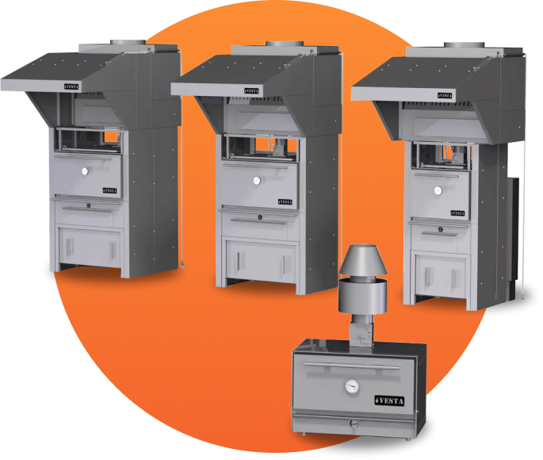
Преимущества печей-мангалов «Веста»
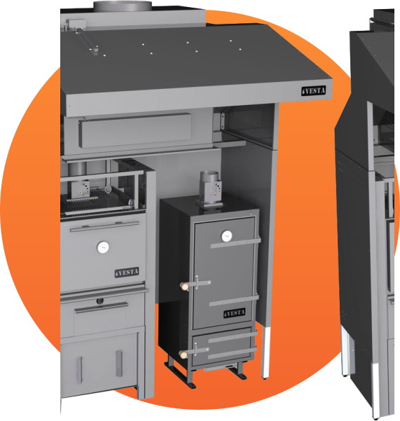
2 модификации жарочной камеры
Из жаропрочной нержавейки как у Josper и из жаропрочной черной стали толщиной 6 мм
Срок эксплуатации не менее 10 лет
При ежедневном использовании по 12-15 часов
Встроенный пламегаситель
Из нержавейки, защищающий вытяжную трубу от прогорания
Огнезащитный экран
Защищает камеру от прогорания, не допуская прямого контакта углей со стенками печи
Металлическая дверь без теплопотерь
Без стекла, т.к. оно быстро теряет свою прозрачность
Есть комплектация с гидрофильтром
Решает проблему с МЧС и дает 100% гарантию безопасности
Скачайте цветной каталог всего оборудования
Закрытые и открытые мангалы, дровяные печи для пиццы, печь для казана, коптильня
Цены на мангалы Веста в комплектации с гидрофильтром
Данную комплектацию хоспера с водяным искрогасителем вы без проблем с МЧС и по нормам СанПин можете использовать в закрытых помещениях заведений общественного питания
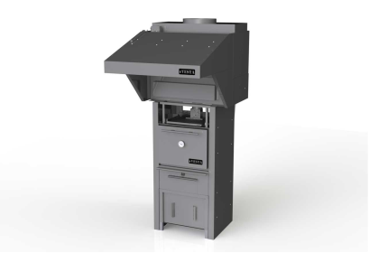
Печь-мангал Vesta 25 с гидрофильтром
40-70 посадочных мест
390 500 руб.
351 450 руб.
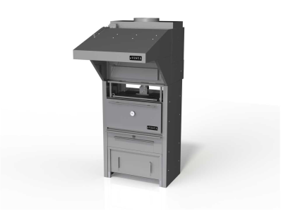
Печь-мангал Vesta 45 с гидрофильтром
70-110 посадочных мест
416 000 руб.
374 400 руб.
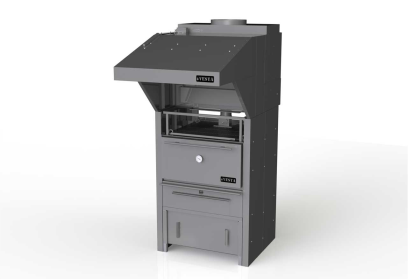
Печь-мангал Vesta 50 с гидрофильтром
110-150 посадочных мест
449 500 руб.
404 550 руб.
Цены на мангалы Веста в комплектации с сухим искрогасителем
Данную комплектацию угольного гриля вы можете использовать на улице или в помещениях с отдельным дымоходом*
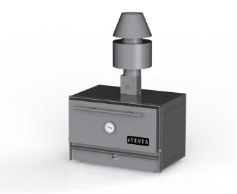
Печь-мангал Vesta 38 с сухим искрогасителем
для частного применения
215 300 руб.
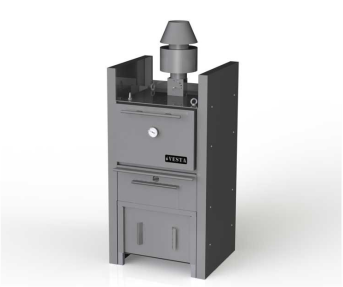
Печь-мангал Vesta 25 с сухим искрогасителем
40-70 посадочных мест
270 800 руб.
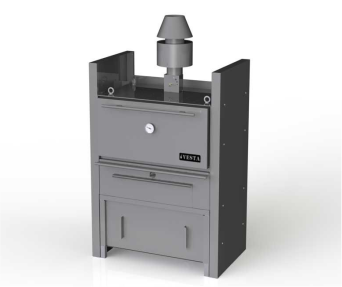
Печь-мангал Vesta 45 с сухим искрогасителем
70-110 посадочных мест
296 300 руб.
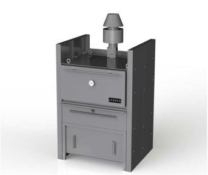
Печь-мангал Vesta 50 с сухим искрогасителем
110-150 посадочных мест
329 800 руб.
Варианты комплектаций и дополнительные аксессуары
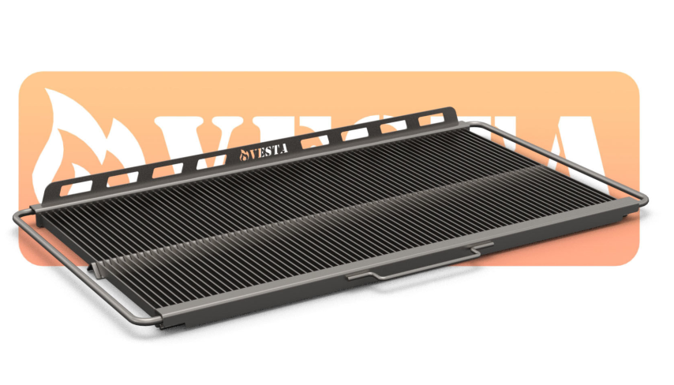
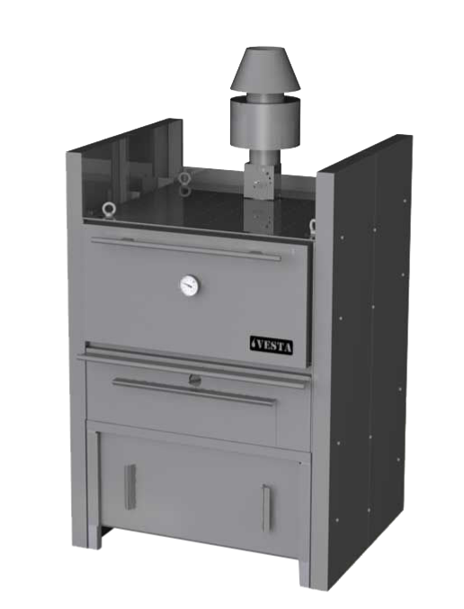
В ограниченном ряде случаев можно использовать мангалы с сухим искрогасителем
1. Применение на улице 2. Применение в закрытом помещении, но должны как минимум выполняться требования: - Ваше заведение — это отдельно стоящее здание - Под мангал есть отдельный дымоход с высокотемпературным вентилятором
Подробнее читайте в "Обзоре вопросов по вентиляции для мангалов"
Антон Ситкин
Основатель проекта "Печи-мангалы.рф" и дилер завода Vesta
“Благодаря закрытым мангалам — хосперам, вы можете готовить вкусные стейки, бургеры, шашлык, овощи-гриль, пиццу и сотни других блюд из вашего популярного гриль-меню”
О дилере завода Веста
Проект «Печи-мангалы.рф» (ИП Ситкин Антон Сергеевич), который территориально находится в городе Ярославль— является официальным дилером российского завода Веста и отгружает оборудование по всей России и страны СНГ, а также в Европу. Завод Веста, находится в городе Йошкар-Ола.
На рисунке изображена полная комплектация состоящая из 3 основных элементов: печь, подставка с тепловым шкафом, водяной искрогаситель — гидрофильтр
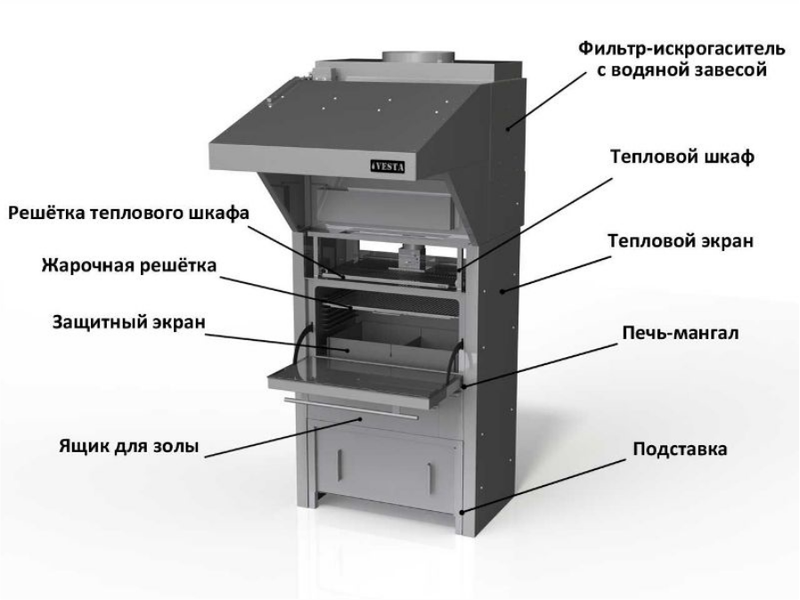
Сравнение популярных производителей закрытых мангалов
На примере печей для кафе на 100 посадочных мест. Комплектации без искрогасителей и подставок
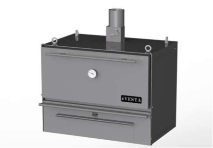
Гриль Vesta 45
Цена от 203 000 рублей
Страна производства: Россия Рекомендуется для заведений на: 100 чел Размер решетки: 840 х 480 мм Производительность в час: 90 кг Время розжига: 35 мин Расход угля в день: 12-16 кг Температура в печи: до 300 С Мощность вытяжки: 2400-3200 м3/час Гарантия: 12 месяцев
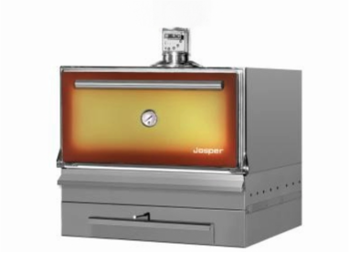
Гриль Josper HJX 45
Цена от 691 045 рублей
Страна производства: Испания Рекомендуется для заведений на: 100 чел Размер решетки: 760 х 510 мм Производительность в час: 90 кг Время розжига: 35 мин Расход угля в день: 12-16 кг Температура в печи: 250 - 300 С Мощность вытяжки: 3200 м3/час Гарантия: 12 месяцев
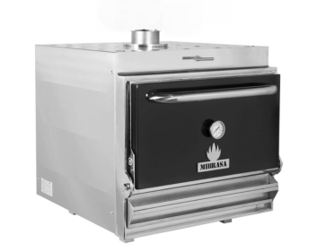
Гриль Mibrasa HMB 110
Цена от 559 940 рублей
Страна производства: Испания Рекомендуется для заведений на: 100 чел Размер решетки: 720 х 600 мм Производительность в час: 100 кг Время розжига: 35 мин Расход угля в день: 18 кг Температура в печи: 250 - 350 С Мощность вытяжки: 3200 м3/час Гарантия: 12 месяцев
Комплексы Vesta
Различные варианты размещения оборудования под единым зонтом с водяным искрогасителем
Вы можете установить несколько единиц оборудования под единым зонтом с водяным искрогасителем
Видео-рецепты
Нажмите на кнопку ниже и посмотрите как приготовить различные блюда на мангале Vesta
Принцип работы закрытого мангала типа хоспер
Закрытый мангал Веста — работает на древесных углях и позволяет одновременно использовать преимущества мангала и печи
Температура в печи до 300 С
Жарочная камера изготовлена из стали повышенной жаростойкости (17ГС) — котловая сталь толщиной 6 мм.
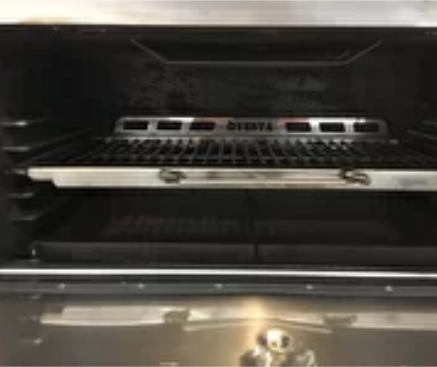
Тепло равномерно распределяется
и поддерживается в течение длительного времени. Время приготовления блюд минимальное
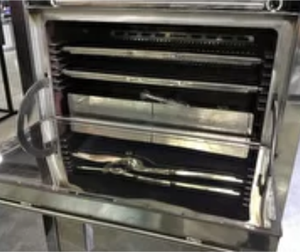
Жар охватывает мясо со всех сторон
Поры закрываются, как в духовке — природный сок продуктов остается внутри
Принцип работы гидрофильтра
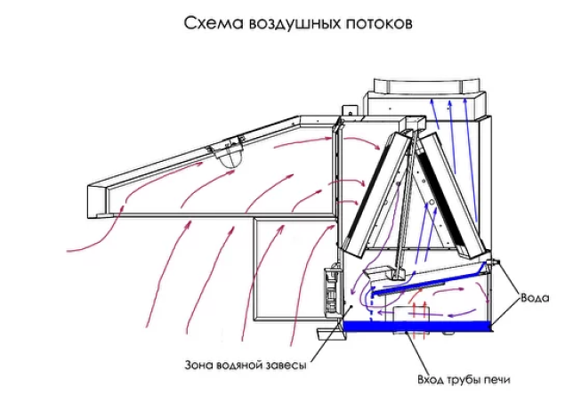
Поток 1 — горячий воздух из трубы печи мангала попадает в ванну с водой, водопадом и водяной завесой и зоной тумана и взвешенных капель воды. В результате многократных разворотов и прохождения через лабиринтный фильтр в систему вентиляции попадает охлажденный до 50-60 градусов Цельсия воздух без искр, сажи и запахов.
Поток 2 — воздух затянутый зонтом. Проходит через лабиринтный фильтр, который также служит жироулавителем, затем попадает в ванну с водой и повторяет движение Потока 1.
Ответы на часто задаваемые вопросы
Хочу купить печь-мангал без подставки с тепловым шкафом
Здесь должен быть PopUp о Хочу купить печь-мангал без подставки с тепловым шкафом
Мощность системы вентиляции. Нужна ли реально такая мощная вытяжка для мангала Веста?
Здесь должен быть PopUp о Мощность системы вентиляции. Нужна ли реально такая мощная вытяжка для мангала Веста?
Какая температура воздуха после гидрофильтра и есть ли запах и дым?
Здесь должен быть PopUp о Какая температура воздуха после гидрофильтра и есть ли запах и дым?
Какой-то специальный уголь необходимо использовать в печи-мангале?
Здесь должен быть PopUp о Какой-то специальный уголь необходимо использовать в печи-мангале?
Какая оптимальная температура приготовления блюд в хоспере Веста?
Здесь должен быть PopUp о Какая оптимальная температура приготовления блюд в хоспере Веста?
Чем отличается сухой искрогаситель от водяного? И зачем мне переплачивать за гидрофильтр?
Здесь должен быть PopUp о Чем отличается сухой искрогаситель от водяного? И зачем мне переплачивать за гидрофильтр?
Какая высота рабочей зоны в печах Веста?
Здесь должен быть PopUp о Какая высота рабочей зоны в печах Веста?
Как часто обслуживать и мыть водяной искрогаситель — гидрофильтр?
Здесь должен быть PopUp о Как часто обслуживать и мыть водяной искрогаситель — гидрофильтр?
В результате запросов на коммерческие предложения у других дилеров завода Веста, были выявлены часто встречающиеся ошибки
1
Менеджер выставляет счет только на печь, не объясняя клиенту, что печь без подставки с тепловым шкафом не должна использоваться
2
Некоторые менеджеры даже выставляют коммерческие предложения, в которых в одной комплектации присутствуют одновременно сухой и водяной искрогасители, что невозможно и не нужно ввиду конструктивных особенностей закрытых грилей Веста
3
Менеджер не предлагает и не рассказывает о дополнительных аксессуарах, которые так необходимы для быстрой и удобной жарки продуктов в мангалах Веста
— Антон Сергеевич, руководитель проекта "Печи-мангалы.рф"
Остались вопросы?!
Пожалуйста, задавайте – ответим!
Если вы только открываете проект — обращайтесь к нам за всей линейкой необходимого вам оборудования